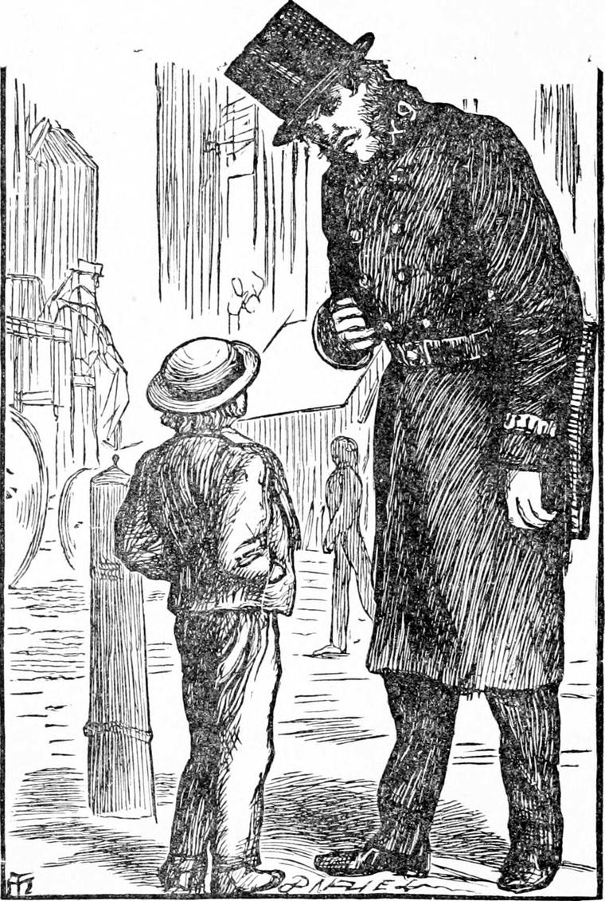
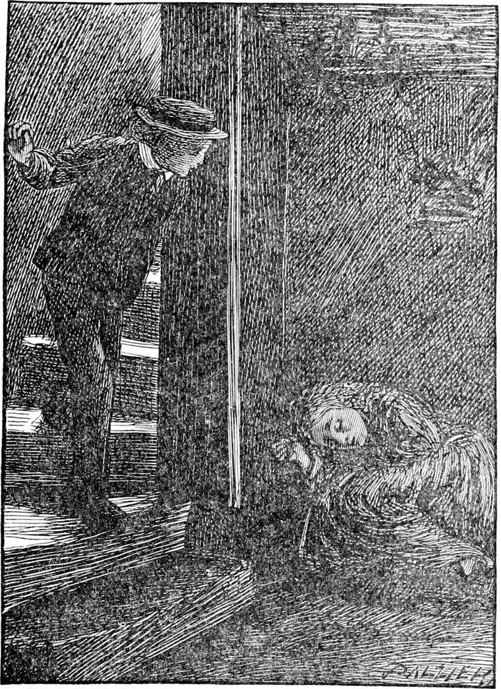

DIAMOND managed with many blunders to read this rhyme to his mother.
“Isn't it nice, mother?” he said.
“Yes, it's pretty,” she answered.
“I think it means something,” returned Diamond.
“I'm sure I don't know what,” she said.
“I wonder if it's the same boy—yes, it must be the same—Little Boy Blue, you know. Let me see—how does that rhyme go?
Little Boy Blue, come blow me your horn—
Yes, of course it is—for this one went `blowing his horn and beating his drum.' He had a drum too.
The sheep's in the meadow, the cow's in the corn,
He had to keep them out, you know. But he wasn't minding his work. It goes—
He's under the haystack, fast asleep.
There, you see, mother! And then, let me see—
For if I do, he'll be sure to cry.
So I suppose nobody did wake him. He was a rather cross little boy, I daresay, when woke up. And when he did wake of himself, and saw the mischief the cow had done to the corn, instead of running home to his mother, he ran away into the wood and lost himself. Don't you think that's very likely, mother?”
“I shouldn't wonder,” she answered.
“So you see he was naughty; for even when he lost himself he did not want to go home. Any of the creatures would have shown him the way if he had asked it—all but the snake. He followed the snake, you know, and he took him farther away. I suppose it was a young one of the same serpent that tempted Adam and Eve. Father was telling us about it last Sunday, you remember.”
“Bless the child!” said his mother to herself; and then added aloud, finding that Diamond did not go on, “Well, what next?”
“I don't know, mother. I'm sure there's a great deal more, but what it is I can't say. I only know that he killed the snake. I suppose that's what he had a drumstick for. He couldn't do it with his horn.”
“But surely you're not such a silly as to take it all for true, Diamond?”
“I think it must be. It looks true. That killing of the snake looks true. It's what I've got to do so often.”
His mother looked uneasy. Diamond smiled full in her face, and added—
“When baby cries and won't be happy, and when father and you talk about your troubles, I mean.”
This did little to reassure his mother; and lest my reader should have his qualms about it too, I venture to remind him once more that Diamond had been to the back of the north wind.
Finding she made no reply, Diamond went on—
“In a week or so, I shall be able to go to the tall gentleman and tell him I can read. And I'll ask him if he can help me to understand the rhyme.”
But before the week was out, he had another reason for going to Mr. Raymond.
For three days, on each of which, at one time or other, Diamond's father was on the same stand near the National Gallery, the girl was not at her crossing, and Diamond got quite anxious about her, fearing she must be ill. On the fourth day, not seeing her yet, he said to his father, who had that moment shut the door of his cab upon a fare—
“Father, I want to go and look after the girl, She can't be well.”
“All right,” said his father. “Only take care of yourself, Diamond.”
So saying he climbed on his box and drove off.
He had great confidence in his boy, you see, and would trust him anywhere. But if he had known the kind of place in which the girl lived, he would perhaps have thought twice before he allowed him to go alone. Diamond, who did know something of it, had not, however, any fear. From talking to the girl he had a good notion of where about it was, and he remembered the address well enough; so by asking his way some twenty times, mostly of policemen, he came at length pretty near the place. The last policeman he questioned looked down upon him from the summit of six feet two inches, and replied with another question, but kindly:
“What do you want there, my small kid? It ain't where you was bred, I guess.”

“No sir” answered Diamond. “I live in Bloomsbury.”
“That's a long way off,” said the policeman.
“Yes, it's a good distance,” answered Diamond; “but I find my way about pretty well. Policemen are always kind to me.”
“But what on earth do you want here?”
Diamond told him plainly what he was about, and of course the man believed him, for nobody ever disbelieved Diamond. People might think he was mistaken, but they never thought he was telling a story.
“It's an ugly place,” said the policeman.
“Is it far off?” asked Diamond.
“No. It's next door almost. But it's not safe.”
“Nobody hurts me,” said Diamond.
“I must go with you, I suppose.”
“Oh, no! please not,” said Diamond. “They might think I was going to meddle with them, and I ain't, you know.”
“Well, do as you please,” said the man, and gave him full directions.
Diamond set off, never suspecting that the policeman, who was a kind-hearted man, with children of his own, was following him close, and watching him round every corner. As he went on, all at once he thought he remembered the place, and whether it really was so, or only that he had laid up the policeman's instructions well in his mind, he went straight for the cellar of old Sal.
“He's a sharp little kid, anyhow, for as simple as he looks,” said the man to himself. “Not a wrong turn does he take! But old Sal's a rum un for such a child to pay a morning visit to. She's worse when she's sober than when she's half drunk. I've seen her when she'd have torn him in pieces.”
Happily then for Diamond, old Sal had gone out to get some gin. When he came to her door at the bottom of the area-stair and knocked, he received no answer. He laid his ear to the door, and thought he heard a moaning within. So he tried the door, and found it was not locked! It was a dreary place indeed,—and very dark, for the window was below the level of the street, and covered with mud, while over the grating which kept people from falling into the area, stood a chest of drawers, placed there by a dealer in second-hand furniture, which shut out almost all the light. And the smell in the place was dreadful. Diamond stood still for a while, for he could see next to nothing, but he heard the moaning plainly enough now, When he got used to the darkness, he discovered his friend lying with closed eyes and a white suffering face on a heap of little better than rags in a corner of the den. He went up to her and spoke; but she made him no answer. Indeed, she was not in the least aware of his presence, and Diamond saw that he could do nothing for her without help. So taking a lump of barley-sugar from his pocket, which he had bought for her as he came along, and laying it beside her, he left the place, having already made up his mind to go and see the tall gentleman, Mr. Raymond, and ask him to do something for Sal's Nanny, as the girl was called.

By the time he got up the area-steps, three or four women who had seen him go down were standing together at the top waiting for him. They wanted his clothes for their children; but they did not follow him down lest Sal should find them there. The moment he appeared, they laid their hands on him, and all began talking at once, for each wanted to get some advantage over her neighbours. He told them quite quietly, for he was not frightened, that he had come to see what was the matter with Nanny.
“What do you know about Nanny?” said one of them fiercely. “Wait till old Sal comes home, and you'll catch it, for going prying into her house when she's out. If you don't give me your jacket directly, I'll go and fetch her.”
“I can't give you my jacket,” said Diamond. “It belongs to my father and mother, you know. It's not mine to give. Is it now? You would not think it right to give away what wasn't yours—would you now?”
“Give it away! No, that I wouldn't; I'd keep it,” she said, with a rough laugh. “But if the jacket ain't yours, what right have you to keep it? Here, Cherry, make haste. It'll be one go apiece.”
They all began to tug at the jacket, while Diamond stooped and kept his arms bent to resist them. Before they had done him or the jacket any harm, however, suddenly they all scampered away; and Diamond, looking in the opposite direction, saw the tall policeman coming towards him.
“You had better have let me come with you, little man,” he said, looking down in Diamond's face, which was flushed with his resistance.
“You came just in the right time, thank you,” returned Diamond. “They've done me no harm.”
“They would have if I hadn't been at hand, though.”
“Yes; but you were at hand, you know, so they couldn't.”
Perhaps the answer was deeper in purport than either Diamond or the policeman knew. They walked away together, Diamond telling his new friend how ill poor Nanny was, and that he was going to let the tall gentleman know. The policeman put him in the nearest way for Bloomsbury, and stepping out in good earnest, Diamond reached Mr. Raymond's door in less than an hour. When he asked if he was at home, the servant, in return, asked what he wanted.
“I want to tell him something.”
“But I can't go and trouble him with such a message as that.”
“He told me to come to him—that is, when I could read—and I can.”
“How am I to know that?”
Diamond stared with astonishment for one moment, then answered:
“Why, I've just told you. That's how you know it.”
But this man was made of coarser grain than the policeman, and, instead of seeing that Diamond could not tell a lie, he put his answer down as impudence, and saying, “Do you think I'm going to take your word for it?” shut the door in his face.
Diamond turned and sat down on the doorstep, thinking with himself that the tall gentleman must either come in or come out, and he was therefore in the best possible position for finding him. He had not waited long before the door opened again; but when he looked round, it was only the servant once more.
“Get, away” he said. “What are you doing on the doorstep?”
“Waiting for Mr. Raymond,” answered Diamond, getting up.
“He's not at home.”
“Then I'll wait till he comes,” returned Diamond, sitting down again with a smile.
What the man would have done next I do not know, but a step sounded from the hall, and when Diamond looked round yet again, there was the tall gentleman.
“Who's this, John?” he asked.
“I don't know, sir. An imperent little boy as will sit on the doorstep.”
“Please sir” said Diamond, “he told me you weren't at home, and I sat down to wait for you.”
“Eh, what!” said Mr. Raymond. “John! John! This won't do. Is it a habit of yours to turn away my visitors? There'll be some one else to turn away, I'm afraid, if I find any more of this kind of thing. Come in, my little man. I suppose you've come to claim your sixpence?”
“No, sir, not that.”
“What! can't you read yet?”
“Yes, I can now, a little. But I'll come for that next time. I came to tell you about Sal's Nanny.”
“Who's Sal's Nanny?”
“The girl at the crossing you talked to the same day.”
“Oh, yes; I remember. What's the matter? Has she got run over?”
Then Diamond told him all.
Now Mr. Raymond was one of the kindest men in London. He sent at once to have the horse put to the brougham, took Diamond with him, and drove to the Children's Hospital. There he was well known to everybody, for he was not only a large subscriber, but he used to go and tell the children stories of an afternoon. One of the doctors promised to go and find Nanny, and do what could be done—have her brought to the hospital, if possible.
That same night they sent a litter for her, and as she could be of no use to old Sal until she was better, she did not object to having her removed. So she was soon lying in the fever ward—for the first time in her life in a nice clean bed. But she knew nothing of the whole affair. She was too ill to know anything.